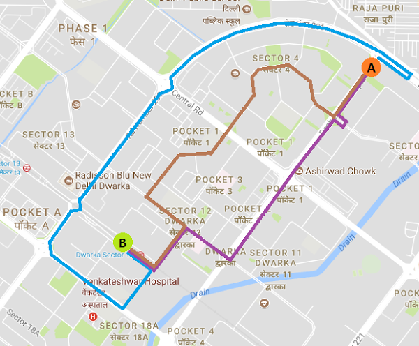

Traffic and its impacts
- Time delays
- Unnecessary stress
- Road rage
- Higher fuel consumption
- Problems in provision of emergency verhicles
MatheTraffics
A Personalized Mathematical Model of Macroscopic Traffic Flow
Assumptions
- Every driver takes decisions with respect to their best interests
- Absence of random and unpredictable events
- Synchronised and ideal traffic lights
Hypothesis
It is possible to use mathematical analysis to find the optimum route and minimum time delay for a route from any two points A and B taking into account traffic density, route distances and traffic lights.
Working Method
speed
=
distancetime
v
=
st
t
=
sv
t
α
s
As distance decreases, time also decreases
Traffic Density
 


Relation between average traffic density and maximum average speed:
v
=
(-2 × 10-10) x3 + (3 × 10-6) x2 - 0.061x + 51
Working Example

 

Traffic Density Data
| 10am | 11am | 12pm | 1pm | 2pm | 3pm | 4pm | 5pm | 6pm | 7pm | 8pm | |
| 1 | 1200 | 1200 | 1200 | 4800 | 1200 | 2400 | 1200 | 1200 | 1200 | 4800 | 4800 |
| 2 | 2400 | 2400 | 2400 | 2400 | 2400 | 1200 | 1200 | 2400 | 4800 | 4800 | 4800 |
| 3 | 1200 | 2400 | 4800 | 4800 | 4800 | 1200 | 2400 | 1200 | 4800 | 4800 | 4800 |
| 4 | 1200 | 2400 | 4800 | 2400 | 2400 | 2400 | 1200 | 1200 | 7200 | 4800 | 4800 |
| 5 | 1200 | 1200 | 1200 | 1200 | 1200 | 2400 | 2400 | 2400 | 4800 | 4800 | 4800 |
| 6 | 2400 | 2400 | 1200 | 1200 | 2400 | 1200 | 1200 | 1200 | 1200 | 2400 | 4800 |
| 7 | 1200 | 1200 | 2400 | 4800 | 4800 | 2400 | 2400 | 2400 | 2400 | 4800 | 4800 |
| 8 | 1200 | 1200 | 1200 | 2400 | 4800 | 1200 | 1200 | 1200 | 1200 | 2400 | 4800 |
| 9 | 1200 | 1200 | 1200 | 2400 | 1200 | 2400 | 4800 | 2400 | 2400 | 4800 | 1200 |
| 10 | 2400 | 2400 | 4800 | 4800 | 2400 | 7200 | 7200 | 4800 | 4800 | 7200 | 7200 |